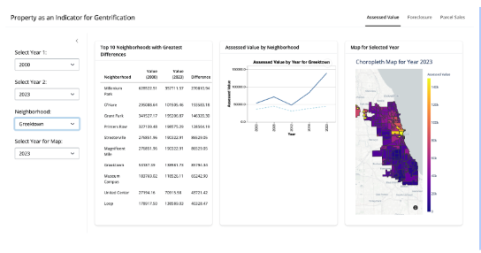

#for reference
# merged_gdf_shapefile_folder = 'merged_gdf_shapefile'
# merged_gdf_shapefile_path = os.path.join(path, 'dashboard', 'data', merged_gdf_shapefile_folder, 'merged_gdf_shapefile.shp')
# # Read the shapefile
# merged_gdf= gpd.read_file(merged_gdf_shapefile_path)
# merged_gdf = merged_gdf_shapefile.rename(columns={
# 'certifie_1': 'certified_tot_mean',
# 'certified_': 'certified_tot',
# 'township_1': 'township_code',
# 'neighborho': 'neighborhood_code_clean',
# })
# print(merged_gdf.columns)Assessed Value
Property as an Indicator for Gentrification
Research Question & Background
As we both had a strong interest in housing, having taken a course in housing policy at Harris, it naturally ushered us into choosing a topic related to housing. Based on our understanding that the south and west side of Chicago are more likely to be burdened with displacement due to gentrification, we sought to find indicators across multiple years that may signal these issues. Additionally, before 2018, the Cook County Assessor’s Office was plagued with corruption issues and scandals that affected lower-income communities. Lacking transparency, the new assessor installed a data team to incorporate mass appraisal techniques to produce property values and share that data with the public. For our final project, we focused on property indicators suggesting a neighborhood is experiencing gentrification.
Data Aggregation & Cleaning
Many factors play a significant role in gentrification, such as rising housing costs or increased accommodations such as parks and commercial buildings. However, the biggest limitation was finding usable data. We utilized Cook County’s Assessor’s open data portal where we found housing-related datasets. However, we realized these datasets were large with over 33 million rows spanning several years. As a result, we realized we needed to cut certain aspects to make the datasets downloadable and usable in Python. Another difficulty, we encountered was that when we did find these datasets, a lot of the data was found to be missing. For example, one dataset from the Assessor’s portal had parcel accommodations with columns such as the distance from the nearest school, hospital, or park. However, upon downloading the data and cleaning the data in VS Code, we found that the columns only had 20% of the data.
We decided to settle on using these years: 2000, 2006, 2012, 2018, and 2023 because the Assessor’s office reassesses ⅓ of the properties every 3 years, processed in thirds by the triads of the City of Chicago, northern suburbs, and southern suburbs. Additionally, we settled on three indicators: assessed value, number of foreclosures (within a half mile in 5 years), and parcel sales. Assessed value relates to the land and building total assessed values for all Cook County parcels. Foreclosures notes when a mortgaged property is repossessed by a bank since the mortgagor fails to keep up their payments. Lastly, parcel sales provides information on how much a land and building were sold for.
We used the Cook County Assessor shapefile to map out the the CSV information stored for each topic geographically by their unique parcel pin. However, the shapefile does not explicitly show Chicago boundaries or neighborhoods. We clipped, merged, and converted the values from each topic’s CSVs into an average with the boundaries of the City of Chicago through the City’s shapefile of their neighborhoods.
Shiny Application & Graphs
We decided to put all our charts and graphs into our Shiny app in order to visually show changes through time. The dashboard includes three tabs: Assessed Value, Foreclosures, and Parcel Sales. All the tabs have the same format with 3 cards and sidebar that includes two drop down menus that toggle for years for the associated table, a toggle for neighborhood, and another to toggle the year for the choropleth.

The first shiny card shows the top ten neighborhoods with the highest difference. In the example, we show the difference between the assessed value for 2000 and 2023. However, we can toggle between different years showcasing 2012 vs 2023 (among the six chosen years we have). The same is true for Foreclosures and Parcel Sales. The next card graph is our Altair line graph. It can toggle to a specific neighborhood and show a timescape of the values (same for foreclosures and parcel sales) within a neighborhood. The dotted line is the average of all the neighborhoods in Chicago. The third card graph is our choropleth which shows a heatmap variation of the selected tab topic by year. It uses a tooltip to hover over and show the neighborhood and its corresponding value.
Findings & Data Analysis
For assessed value, we see that Greektown had the highest increase between 2000 and 2023. The choropleth from the assessed values seemed more uniform throughout the city in 2000, though starting in 2018 it shows that the highest-valued properties are on the north side of Chicago. Auburn Gresham had the most foreclosures between 2000 and 2023. For the year 2000, there seems to be little to no foreclosures. Based on the choropleth on foreclosures in 2012 to 2023, most foreclosed properties are in the west and south side of Chicago. O’Hare has the highest value in parcel sale between 2000 and 2023. There is no clear pattern for the choropleth on parcel sales in Chicago. However, neighborhoods such as South Shore, Little Village, Archer Heights, and Humbolt Park faced streep increases in parcel sale values from 2018 (pre-pandemic) to 2023 (post-pandemic) and were included in the top ten neighborhoods of the shiny. Indicating that these neighborhoods may be facing gentrification.
Policy Implications of Our Findings
With our dashboard, one of the policy implications we use for our findings is to monitor economic displacement which would allow us to identify neighborhoods experiencing significant changes. This is key to addressing any neighborhoods feeling displacement pressures. Another policy implication is to develop equitable policies that would highlight disparities in property value increase and affordability across neighborhoods. An additional policy implication would to be increase data transparency and community engagement where findings can be shared with stakeholders to empower communities. Lastly, tax policy adjustments can be made to cater to rising property taxes that disproportionately affect long-term, lower-income residents.
Direction for Future Work
If given additional time and resources, it would be useful and insightful to plot demographic data. It would provide a bigger picture if certain minority groups or income levels are being displaced. Additionally, it would be able to show the demographic makeup of certain regions that have changed pre- and post-gentrified periods. Especially since when people think of gentrification, they think of “white yuppies” taking over neighborhoods where they add Whole Foods and artisan coffee shops. We want to use demographic data to either further prove or disprove this claim. Additionally, we would have liked to plot public spaces such as schools, parks, and hospitals. Especially if we consider the strong relationship between schools and property values where neighborhoods with higher property values tend to have access to higher-quality public education.
# # fc data reference
# fc_gdf_shapefile_folder = 'fc_gdf_shapefile'
# fc_gdf_shapefile_path = os.path.join(path, 'dashboard', 'data', 'fc_gdf_shapefile', 'fc_gdf_shapefile.shp')
# fc_gdf = gpd.read_file(fc_gdf_shapefile_path)
# fc_gdf = fc_gdf.rename(columns={
# 'num_fore_1': 'num_foreclosure_in_half_mile_past_5_years_mean',
# 'num_forecl': 'num_foreclosure_in_half_mile_past_5_years',
# 'pri_neigh': 'fc_pri_neigh',
# 'geometry': 'fc_geometry',
# 'year': 'fc_year'
# })
# print(fc_gdf.columns)import pandas as pd
import geopandas as gpd
import matplotlib.pyplot as plt
import altair as altimport os
path = r'/Users/maryell/Desktop/finalproject/'
#path = r'/Users/sarahkim/Documents/Coding/'assessed_value = 'Assessed_Value.csv'
absolute_path_av = os.path.join(path, assessed_value)
av_df = pd.read_csv(absolute_path_av)parcel_proximity_fc = 'Assessor_-_Parcel_Proximity_20241121(foreclosure).csv'
absolute_path_fc = os.path.join(path, parcel_proximity_fc)
fc_df = pd.read_csv(absolute_path_fc)parcel_sale = 'Assessor_-_Parcel_Sales_20241121(00-23).csv'
absolute_path_ps = os.path.join(path, parcel_sale)
ps_df = pd.read_csv(absolute_path_ps)assessed_value = 'Assessed_Value.csv'
absolute_path_av = os.path.join(path, assessed_value)
av_df = pd.read_csv(absolute_path_av)
print(av_df.head())#assessor neighborhood boundaries shapefile
neighborhood_folder = 'Neighborhood_Boundaries'
neighborhood_path = os.path.join(path, neighborhood_folder, 'geo_export_ad3b7229-3a91-4260-85b6-64676cb28962.shp')
neighborhood_gdf = gpd.read_file(neighborhood_path)
print(neighborhood_gdf.columns)
print(neighborhood_gdf.crs)
neighborhood_gdf = neighborhood_gdf[neighborhood_gdf['triad_code'] == '1']
print(neighborhood_gdf.head())#chicago zip code
zip_neighborhood_folder = 'zip_neighborhood'
zip_neighborhood_path = os.path.join(path, zip_neighborhood_folder, 'geo_export_94c921b1-33a1-481a-9c36-7e6d40530da7.shp')
zip_neighborhood_gdf = gpd.read_file(zip_neighborhood_path)
print(zip_neighborhood_gdf.columns)
print(zip_neighborhood_gdf.head())
print(zip_neighborhood_gdf.crs)neighborhood_gdf = gpd.sjoin(neighborhood_gdf,
zip_neighborhood_gdf[['shape_area', 'pri_neigh', 'sec_neigh', 'geometry']],
how='left',
predicate='intersects')
print(neighborhood_gdf.columns)
clipped_gdf = gpd.clip(neighborhood_gdf, zip_neighborhood_gdf)
print(clipped_gdf[['pri_neigh', 'sec_neigh']].head())av_df['certified_tot'] = av_df['certified_tot'].astype(str).str.replace(',', '').astype(float)
av_df.rename(columns={'tax_year': 'year'}, inplace=True)
av_df['township_code'] = av_df['neighborhood_code'].astype(str).str[:2]
av_df['neighborhood_code_clean'] = av_df['neighborhood_code'].astype(str).str[2:]
clipped_gdf['township_code'] = clipped_gdf['town_nbhd'].astype(str).str[:2]
clipped_gdf['neighborhood_code_clean'] = clipped_gdf['town_nbhd'].astype(str).str[2:]
av_df['certified_tot'] = pd.to_numeric(av_df['certified_tot'])
av_merged_df = pd.merge(av_df, clipped_gdf,
left_on=['township_code', 'neighborhood_code_clean'],
right_on=['township_code', 'neighborhood_code_clean'],
how='inner')
av_aggregated = av_merged_df.groupby(['township_code', 'neighborhood_code_clean', 'year']).agg(
{'certified_tot': 'mean'}).reset_index()
merged_gdf = clipped_gdf.merge(av_aggregated,
left_on=['township_code', 'neighborhood_code_clean'],
right_on=['township_code', 'neighborhood_code_clean'],
how='left')
merged_gdf['certified_tot_mean'] = merged_gdf.groupby(['geometry', 'year'])['certified_tot'].transform('mean')
print(merged_gdf.head())
shapefile_path = os.path.join(path, 'merged_gdf_shapefile')
merged_gdf.to_file(shapefile_path, driver='ESRI Shapefile')merged_gdf_2023 = merged_gdf[merged_gdf['year'] == 2023]
fig, ax = plt.subplots(figsize=(8, 5), dpi=75)
merged_gdf_2023.plot(column='certified_tot_mean', ax=ax, legend=True,
cmap='Blues', edgecolor='lightgray', linewidth=0.5)
ax.set_title('Average Assessed Value by Geometry (Neighborhood Area, Year 2020)')
ax.set_xticks([])
ax.set_yticks([])
plt.show()import contextily as ctx
merged_gdf_2000 = merged_gdf[merged_gdf['year'] == 2000]
merged_gdf_2000 = merged_gdf_2000.to_crs(epsg=3857)
fig, ax = plt.subplots(figsize=(8, 5), dpi=175)
merged_gdf_2000.plot(column='certified_tot_mean', ax=ax, legend=True,
cmap='Blues', edgecolor='lightgray', linewidth=0.5)
ctx.add_basemap(ax, crs=merged_gdf_2000.crs.to_string(), source=ctx.providers.OpenStreetMap.Mapnik, alpha=0.2)
ax.set_title('Average Assessed Value by Geometry (Neighborhood Area, Year 2000)')
ax.set_xticks([])
ax.set_yticks([])
plt.show()agg_merged = merged_gdf.groupby('year', as_index=False)['certified_tot_mean'].mean()
agg_merged['certified_tot_mean_millions'] = agg_merged['certified_tot_mean']line_chart = alt.Chart(agg_merged).mark_line().encode(
x=alt.X('year:O', title='Year'),
y=alt.Y('certified_tot_mean_millions:Q',
title='Certified Total (in millions)',
axis=alt.Axis(format='.1f')),
tooltip=[alt.Tooltip('year:O', title='Year'),
alt.Tooltip('certified_tot_mean_millions:Q', format='.2f', title='Certified Total')],
).properties(
title="Average Certified Total by Year",
width=600,
height=400
)
line_chartForeclosure
assessed_value = 'Assessed_Value.csv'
absolute_path_av = os.path.join(path, assessed_value)
av_df = pd.read_csv(absolute_path_av)
print(av_df.head())parcel_proximity_fc = 'Assessor_-_Parcel_Proximity_20241121(foreclosure).csv'
absolute_path_fc = os.path.join(path, parcel_proximity_fc)
fc_df = pd.read_csv(absolute_path_fc)
print(fc_df.head())#assessor neighborhood boundaries shapefile
neighborhood_folder = 'Neighborhood_Boundaries'
neighborhood_path = os.path.join(path, neighborhood_folder, 'geo_export_ad3b7229-3a91-4260-85b6-64676cb28962.shp')
neighborhood_gdf = gpd.read_file(neighborhood_path)
neighborhood_gdf = neighborhood_gdf[neighborhood_gdf['triad_code'] == '1']
print(neighborhood_gdf.columns)
print(neighborhood_gdf.head())#chicago zip code
zip_neighborhood_folder = 'zip_neighborhood'
zip_neighborhood_path = os.path.join(path, zip_neighborhood_folder, 'geo_export_94c921b1-33a1-481a-9c36-7e6d40530da7.shp')
zip_neighborhood_gdf = gpd.read_file(zip_neighborhood_path)
print(zip_neighborhood_gdf.columns)
print(zip_neighborhood_gdf.head())neighborhood_gdf = gpd.sjoin(neighborhood_gdf,
zip_neighborhood_gdf[['shape_area', 'pri_neigh', 'sec_neigh', 'geometry']],
how='left',
predicate='intersects')
print(neighborhood_gdf.columns)
clipped_gdf = gpd.clip(neighborhood_gdf, zip_neighborhood_gdf)
print(clipped_gdf[['pri_neigh', 'sec_neigh']].head())#Foreclosure - Parcel Foreclosure and Shapefile (fc_df & neighborhood_gdf)
print(clipped_gdf.columns)
print(av_df.columns)
print(av_df.head())
print(fc_df.columns)
print(fc_df.head())av_df['township_code'] = av_df['neighborhood_code'].astype(str).str[:2]
av_df['neighborhood_code_clean'] = av_df['neighborhood_code'].astype(str).str[2:]
clipped_gdf['township_code'] = clipped_gdf['town_nbhd'].astype(str).str[:2]
clipped_gdf['neighborhood_code_clean'] = clipped_gdf['town_nbhd'].astype(str).str[2:]av_df['certified_tot'] = av_df['certified_tot'].astype(str).str.replace(',', '').astype(float)
av_df.rename(columns={'tax_year': 'year'}, inplace=True)
fc_df.rename(columns={'pin10': 'pin'}, inplace=True)
av_df['pin'] = av_df['pin'].astype(str).str[:10].str.strip()
fc_df['pin'] = fc_df['pin'].astype(str).str.strip()
fc_df = fc_df.dropna(subset=['year'])
fc_merged_df = pd.merge(av_df, fc_df, on=['pin', 'year'], how='left', indicator=True)
match_count = fc_merged_df['_merge'].value_counts()
print(match_count)fc_merged_df.dropna(subset=['num_foreclosure_data_year', 'num_foreclosure_in_half_mile_past_5_years'], inplace=True)
print(fc_merged_df.head())fc_merged_df.columns = fc_merged_df.columns.str.strip()
fc_merged_df = pd.merge(fc_merged_df, clipped_gdf,
left_on=['township_code', 'neighborhood_code_clean'],
right_on=['township_code', 'neighborhood_code_clean'],
how='inner')
fc_aggregated = fc_merged_df.groupby(['township_code', 'neighborhood_code_clean', 'year']).agg(
{'num_foreclosure_in_half_mile_past_5_years': 'mean'}).reset_index()
fc_aggregated = fc_aggregated.dropna(subset=['year'])
print(fc_aggregated.head())fc_merged_gdf = clipped_gdf.merge(fc_aggregated,
left_on=['township_code', 'neighborhood_code_clean'],
right_on=['township_code', 'neighborhood_code_clean'],
how='left')
print(fc_merged_gdf.head())fc_merged_gdf['num_foreclosure_in_half_mile_past_5_years_mean'] = fc_merged_gdf.groupby(['geometry', 'year'])['num_foreclosure_in_half_mile_past_5_years'].transform('mean')
print(fc_merged_gdf.head())
shapefile_path = os.path.join(path, 'fc_gdf_shapefile')
fc_merged_gdf.to_file(shapefile_path, driver='ESRI Shapefile')fc_merged_gdf_2000 = fc_merged_gdf[fc_merged_gdf['year'] == 2000]
fc_merged_gdf_2000 = fc_merged_gdf_2000.to_crs(epsg=5070)
fig, ax = plt.subplots(figsize=(8, 5), dpi=75)
fc_merged_gdf_2000.plot(column='num_foreclosure_in_half_mile_past_5_years_mean', ax=ax, legend=True,
cmap='Blues',
edgecolor='lightgray', linewidth=0.5)
ax.set_title('Average Foreclosures in 2000 (Half Mile Radius, Past 5 Years) by Neighborhood')
ax.set_xticks([])
ax.set_yticks([])
plt.show()agg_fc = fc_merged_gdf.groupby(['year']).agg(
{'num_foreclosure_in_half_mile_past_5_years': 'mean'}).reset_index()
line_chart = alt.Chart(agg_fc).mark_line().encode(
x=alt.X('year:O', title='Year'),
y=alt.Y('num_foreclosure_in_half_mile_past_5_years:Q',
title='Average Foreclosures in Half Mile (Past 5 Years)',
axis=alt.Axis(format='.1f')),
tooltip=[alt.Tooltip('year:O', title='Year'),
alt.Tooltip('num_foreclosure_in_half_mile_past_5_years:Q', format='.2f', title='Average Foreclosures')]
).properties(
title="Average Foreclosures Over Time",
width=300,
height=200
)
line_chartParcel Sales
assessed_value = 'Assessed_Value.csv'
absolute_path_av = os.path.join(path, assessed_value)
av_df = pd.read_csv(absolute_path_av)
print(av_df.head())
parcel_sale = 'Assessor_-_Parcel_Sales_20241121(00-23).csv'
absolute_path_ps = os.path.join(path, parcel_sale)
ps_df = pd.read_csv(absolute_path_ps)
print(ps_df.head())neighborhood_folder = 'Neighborhood_Boundaries'
neighborhood_path = os.path.join(path, neighborhood_folder, 'geo_export_ad3b7229-3a91-4260-85b6-64676cb28962.shp')
neighborhood_gdf = gpd.read_file(neighborhood_path)
neighborhood_gdf = neighborhood_gdf[neighborhood_gdf['triad_code'] == '1']
print(neighborhood_gdf.columns)
print(neighborhood_gdf.head())
zip_neighborhood_folder = 'zip_neighborhood'
zip_neighborhood_path = os.path.join(path, zip_neighborhood_folder, 'geo_export_94c921b1-33a1-481a-9c36-7e6d40530da7.shp')
zip_neighborhood_gdf = gpd.read_file(zip_neighborhood_path)
print(zip_neighborhood_gdf.columns)
print(zip_neighborhood_gdf.head())neighborhood_gdf = gpd.sjoin(neighborhood_gdf,
zip_neighborhood_gdf[['shape_area', 'pri_neigh', 'sec_neigh', 'geometry']],
how='left',
predicate='intersects')
print(neighborhood_gdf.columns)
clipped_gdf = gpd.clip(neighborhood_gdf, zip_neighborhood_gdf)
print(clipped_gdf[['pri_neigh', 'sec_neigh']].head())av_df['certified_tot'] = av_df['certified_tot'].astype(str).str.replace(',', '').astype(float)
av_df.rename(columns={'tax_year': 'year'}, inplace=True)
av_df['township_code'] = av_df['neighborhood_code'].astype(str).str[:2]
av_df['neighborhood_code_clean'] = av_df['neighborhood_code'].astype(str).str[2:]
av_df['pin'] = av_df['pin'].astype(str).str[:10].str.strip()
ps_df['sale_price'] = ps_df['sale_price'].astype(float)
ps_df.drop(columns=['township_code', 'neighborhood_code'], inplace=True)
ps_df.rename(columns={'pin10': 'pin'}, inplace=True)
ps_df['pin'] = ps_df['pin'].astype(str).str[:10].str.strip()
ps_merged_df = pd.merge(av_df, ps_df, on=['pin', 'year'], how='left', indicator=True)
ps_merged_df = ps_merged_df.dropna(subset=['sale_price'])
ps_merged_df['sale_price'] = ps_merged_df['sale_price'].astype(float)clipped_gdf['township_code'] = clipped_gdf['town_nbhd'].astype(str).str[:2]
clipped_gdf['neighborhood_code_clean'] = clipped_gdf['town_nbhd'].astype(str).str[2:]
ps_merged_df = pd.merge(ps_merged_df, clipped_gdf,
left_on=['township_code', 'neighborhood_code_clean'],
right_on=['township_code', 'neighborhood_code_clean'],
how='inner')
print(ps_merged_df.head())ps_aggregated = ps_merged_df.groupby(['township_code', 'neighborhood_code_clean', 'year']).agg(
{'sale_price': 'mean'}).reset_index()
ps_aggregated = ps_aggregated.dropna(subset=['year'])
print(ps_aggregated.head())ps_merged_gdf = clipped_gdf.merge(ps_aggregated,
left_on=['township_code', 'neighborhood_code_clean'],
right_on=['township_code', 'neighborhood_code_clean'],
how='left')
print(ps_merged_gdf.head())ps_merged_gdf['sale_price_mean'] = ps_merged_gdf.groupby(['geometry', 'year'])['sale_price'].transform('mean')
print(ps_merged_gdf.head())
shapefile_path = os.path.join(path, 'ps_gdf_shapefile')
ps_merged_gdf.to_file(shapefile_path, driver='ESRI Shapefile')ps_merged_gdf_2000 = ps_merged_gdf[ps_merged_gdf['year'] == 2000]
ps_merged_gdf_2000 = ps_merged_gdf_2000.to_crs(epsg=5070)
fig, ax = plt.subplots(figsize=(8, 5), dpi=75)
ps_merged_gdf_2000.plot(column='sale_price_mean', ax=ax, legend=True,
cmap='Blues',
edgecolor='lightgray', linewidth=0.5)
ax.set_title('Average Sale Price in 2000 by Neighborhood')
ax.set_xticks([])
ax.set_yticks([])
plt.show()